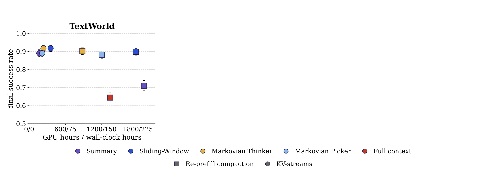
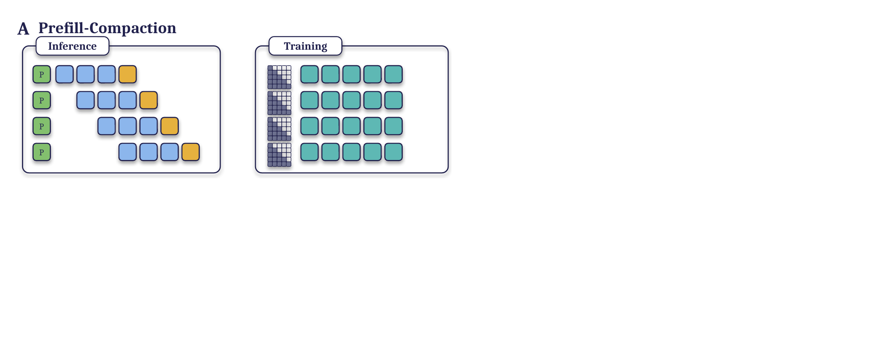
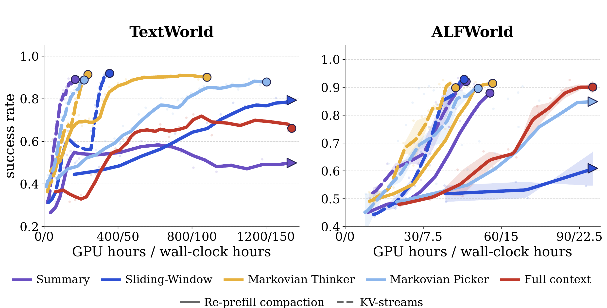
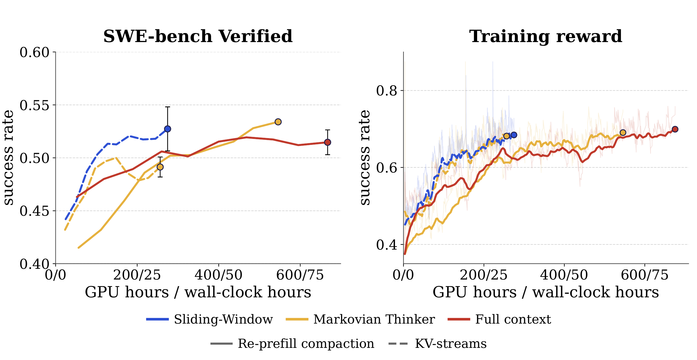
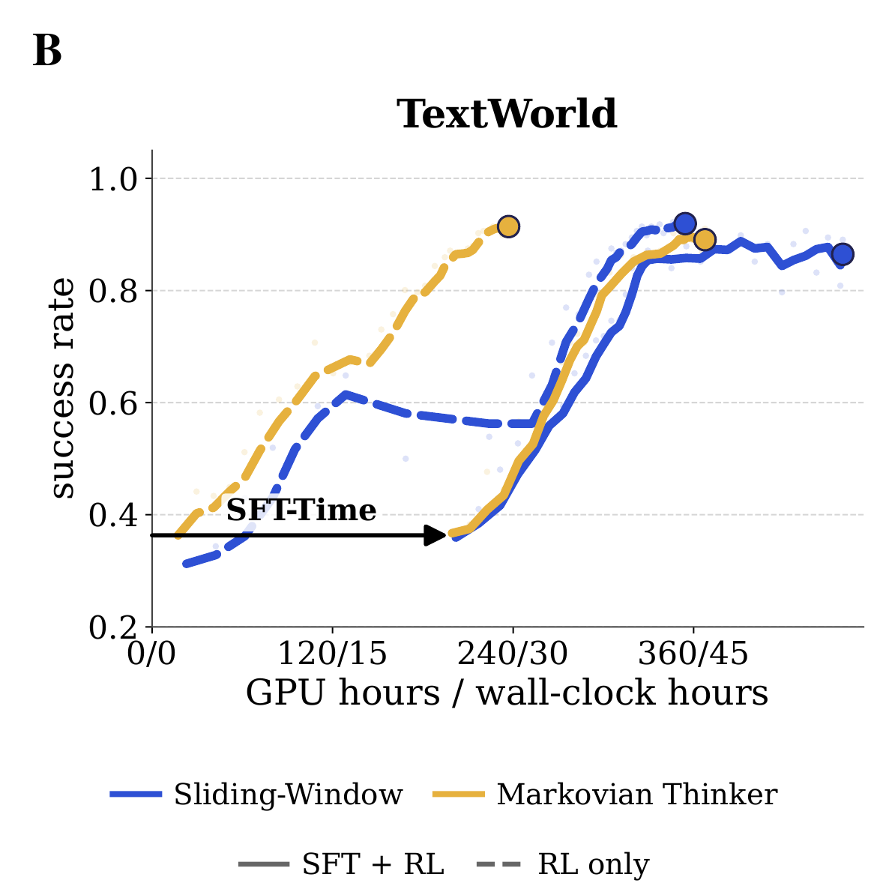
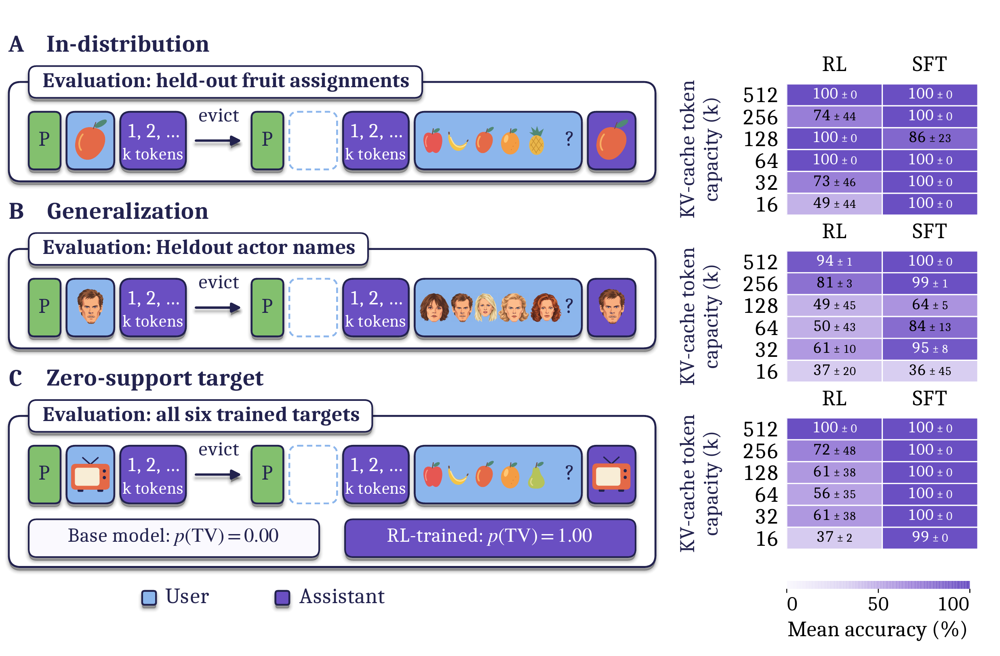
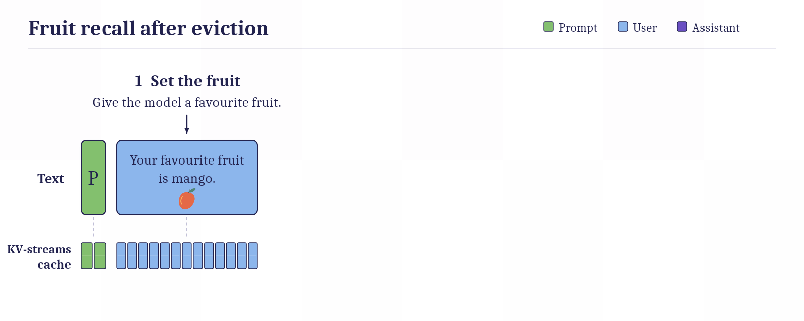

Overview
Long-horizon agents accumulate a growing text history and a corresponding key–value (KV) cache. Context compaction keeps memory bounded by deleting, selecting, or summarizing earlier turns. Conventional implementations then prefill the compacted context into a new trace, causing the model to process retained tokens again.
KV-streams avoids that repeated prefill. The inference engine evicts selected KV entries while preserving the rest of the cache. The trainer applies a custom attention mask that reproduces the same eviction pattern over one continuous trajectory.
We test the method with four compaction strategies on TextWorld, ALFWorld, and SWE-bench Verified. The main questions are whether KV-streams reduces training time, preserves task performance, and allows retained KVs to carry information after the source text has been removed.
Supplemental reading
- How KV-streams works contrasts re-prefill with cache eviction.
- Why repeated prefill is expensive gives the extra-compute term.
- Text-based games and SWE-bench Verified report the main results.
- Recurrent state after eviction covers the controlled retrieval experiments.
Notation
N is the rollout length, B the context budget, and r the number of entries retained after compaction. A compaction operator κ maps the current context C to a shorter context κ(C).
Experimental setup
Text-game experiments use Qwen3-4B-Instruct-2507. Software-engineering experiments use Qwen3.5-4B on SWE-bench Verified. ALFWorld training uses multiple seeds. TextWorld and software-engineering training use one seed because of compute cost; the final SWE-bench checkpoint is evaluated over three seeds.
Cite this work
@misc{penaloza2026kvstreams,
title = {KV-streams for Efficient Compaction in
Agentic Reinforcement Learning},
author = {Penaloza, Emiliano and Malenfant, Dane and others},
year = {2026},
note = {Manuscript}
}How KV-streams works
Re-prefill compaction breaks a rollout into separate traces. After each compaction, every retained token is processed again. KV-streams instead removes the selected KV entries in place and continues the same trace. During training, the custom mask blocks attention to the deleted span, matching the visibility pattern used at inference time.

Compaction strategies
- Summary
- Drop the prior context and replace it with a generated summary.
- Markovian Thinker
- Delete half of the context at each compaction without replacement.
- Sliding Window
- Keep almost the full recent window, the highest-retention setting.
- Markovian Pick
- Let the model choose which turns to retain and delete the rest.
Why repeated prefill is expensive
Suppose a context has budget B. After compaction, r entries remain, so the model can generate B − r new entries before the next compaction. A rollout of length N compacts approximately N/(B − r) times. If each compaction prefills all r retained entries, the additional work is:
The cost grows as the retained context approaches the budget. Reducing the number of compactions or retaining fewer entries lowers the overhead but does not remove it.
Experimental results
Text-based games
On TextWorld, KV-streams reaches the final performance of the corresponding re-prefill runs with 3.7×–11.3× fewer GPU-hours while performing similarly or better. On ALFWorld, where trajectories are shorter, training throughput improves by 1.3×–3.0× with no observed loss in final success rate.

SWE-bench Verified
Sliding-window KV-streams reaches 52.7 ± 2.1%, compared with 51.5 ± 1.2% for full context and 53.4 ± 0.2% for re-prefill Markovian Thinker. It reaches peak performance in about 20 hours, versus more than 65 hours for full context. With Markovian Thinker, the corresponding times are about 32 and 60 hours.

Is SFT needed first?
The paper compares reinforcement learning from the base model with an SFT warm start followed by RL. Once the GPU time spent on SFT is included, RL alone is more compute-efficient and shows no observed performance drop. SFT adds substantial delay for Markovian Thinker; with sliding window, both routes reach peak performance in approximately the same total time.

Recurrent state after eviction
Retained KVs attended to text that may no longer be visible, so the cache can act as a recurrent state. The controlled experiment assigns an object, makes the model decode a sequence, evicts the assignment, and then asks for the object. The answer cannot be recovered from the active text.

Fruit recall after eviction
The animation isolates the sequence used in the first retrieval setting: assign a fruit, remove the assigning turn from the active context, and query the model later. Only the retained KV state can carry the assignment forward.

Discussion and limitations
KV-streams removes a systems cost introduced by common compaction pipelines. The experiments show lower training compute without evidence of reduced final performance for the tested models and tasks. They also show that an evicted text span can continue to influence generation through retained KVs.
The evidence has clear limits. TextWorld and software-engineering training use a single seed, although the final SWE-bench checkpoint is evaluated over three seeds. The models are in the 4B parameter range. The recurrent-state result comes from a controlled retrieval task and does not imply reliable long-term memory in arbitrary environments. KV-streams also requires coordinated inference-time eviction and trainer masking; the public code covers a subset of the experiments.
Paper and code
[Penaloza et al., 2026] Emiliano Penaloza, Dane Malenfant, Dheeraj Vattikonda, et al. KV-streams for Efficient Compaction in Agentic Reinforcement Learning. Paper PDF.
[Code] KV-streams repository and SGLang fork.